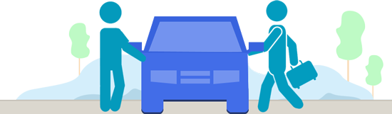

I already have a job, so can I just drive a few hours in my off-time?
Absolutely. You choose when you drive. Some drivers make more than $800 just driving Friday nights and weekends.
How do I get paid?
Drivers get paid for every trip on a per minute and mile basis. Money is deposited into your account each week automatically.
Is TipRyde safe?
Our community’s safety is our top priority. We make every effort to hire and maintain the very best fleet of drivers. We hire local drivers and conduct background checks. That said, every passenger has the right to refuse to enter an automobile if they feel unsafe. Each passenger has emergency messaging built into their app. Drivers and passengers also rate each other at the end of a ride, so that we’re always upholding our high community standards.
What are TipRyde’s requirements?
You must be at least 21 and own an iPhone or Android phone. As part of our approval process, you’ll undergo a DMV check, plus a national and county background check. This will require a Social Security number, in addition to an in-state driver’s license that is at least a year old.
Your car needs to have four external door handles and at least five total seat belts. You must be a covered party on your car’s in-state insurance, and have in-state license plates. We’ll confirm all of this during your 19-point vehicle inspection.
Cancellation policy for passengers.
If you no longer need a ride, feel free to cancel it. To cancel a ride, tap 'Cancel Ride' in the bottom left corner of the app and confirm.To compensate your driver for their time and gas, we'll apply a cancellation fee or penalty for specific rides.
Cancel fees.
You may be charged a fee for cancelling a ride when both of the following occur:
For TipRyde Line rides, we may charge a cancellation fee should you cancel any time after a driver accepts your ride request.
In most cities, you'll be charged $10 for cancelling a scheduled ride. To see your region's cancel fees, check our Cities page.
How to get picked up as a passenger?
After you've requested a ride and a driver has accepted, you'll see the driver's name, ETA (estimated time of arrival), rating, profile photo, and an image of their car.
While you're waiting, you can add your destination at the bottom of the screen. This automatically loads your drop-off location into the driver's app when the ride starts. For standard TipRyde rides, you can update your destination address as many times as you need to — great for running errands. For TipRyde Line, the destination is entered prior to seeing this screen.
If you have any special instructions, or need to speak to your driver while they are on their way, you can give them a call or text them in the app by tapping the icon in the bottom left.
You'll get a text message when your driver arrives and you're ready to ride!
How to pay for a TipRyde ride?
This is your opportunity to rate your TipRyde driver and pay for your ride.
If you don't rate and pay within 16-24 hours of your ride, then the ride cost is charged to your default payment method automatically and your driver won't be rated. You'll receive an email receipt once payment is submitted.
How to get picked up as a passenger?
1. After you've requested a ride and a driver has accepted, you'll see the driver's name, ETA (estimated time of arrival), rating, profile photo, and an image of their car. 2. While you're waiting, you can add your destination at the bottom of the screen. This automatically loads your drop-off location into the driver's app when the ride starts. For standard TipRyde rides, you can update your destination address as many times as you need to — great for running errands. For TipRyde Line, the destination is entered prior to seeing this screen. 3. If you have any special instructions, or need to speak to your driver while they are on their way, you can give them a call in the app by tapping the icon in the bottom left. 4. You'll also be able to split your ride, share your ETA with friends, and cancel your ride. 5. You'll get a text message when your driver arrives and you're ready to ride!How to rate your driver?
After each ride, you'll have the opportunity to rate your driver (and they'll rate you, too). When requesting a ride, you'll see your driver's rating and they'll see yours.
What to consider when rating
Your rating should be based on your interaction with the driver during the ride. When choosing a rating, think about whether your driver was friendly, safe, a good navigator, and made you want to use TipRyde again.
TipRyde has rigorous standards for drivers. Each rating you give can have an impact on a driver's future with TipRyde. In addition, passengers with low ratings may not have their ride requests accepted as often.
